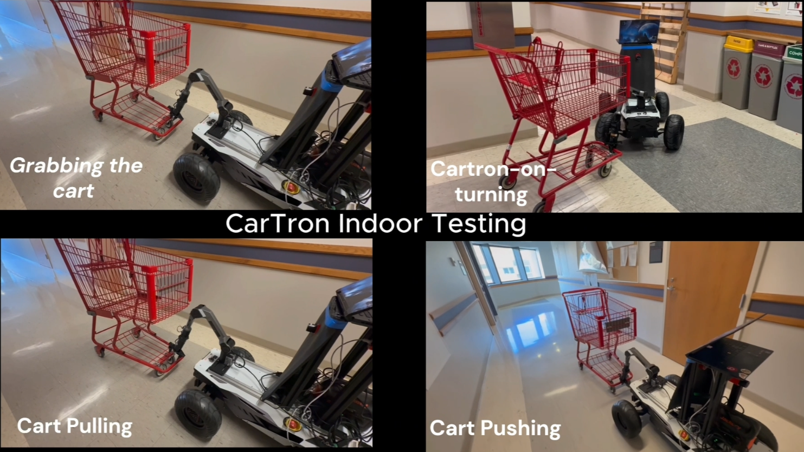
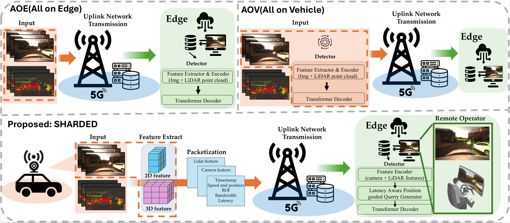
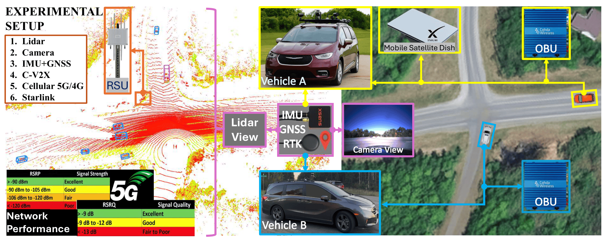
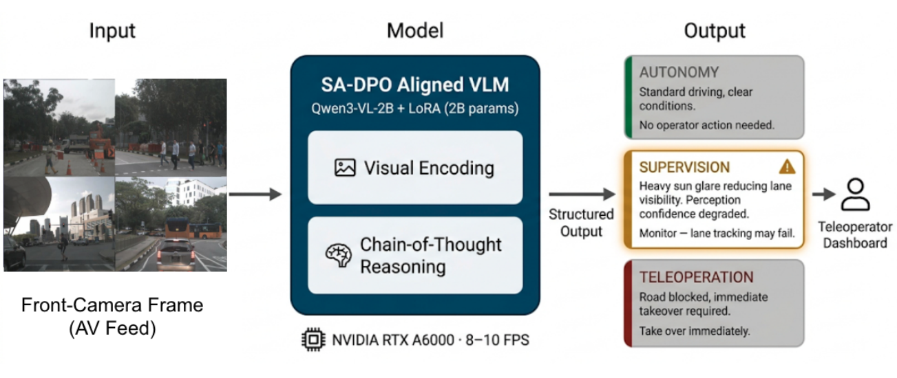
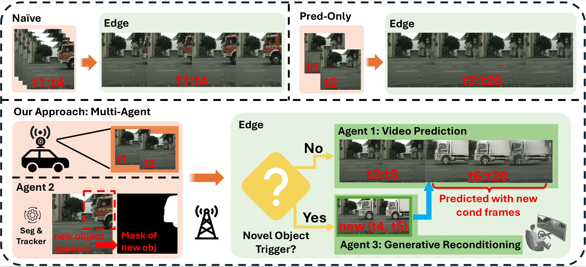
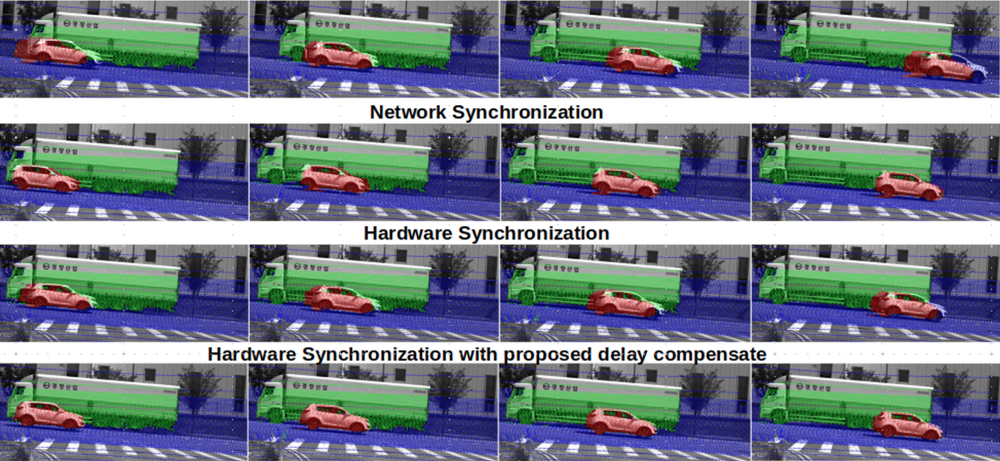

Ajay Kumar
I am currently a Research Associate in the Department of Computer Science & Engineering at the University of Minnesota, working on autonomous systems, teleoperation, and network-aware intelligent robotics. Previously, I served as a Postdoctoral Research Fellow at DGIST (South Korea), where I worked on Level-4 autonomous driving, including localization, 3D mapping, sensor calibration, and perception systems.
My research lies at the intersection of robotics, mobility, and artificial intelligence, with a strong focus on real-world deployment challenges. I develop algorithms and system-level solutions that enable intelligent agents to perceive complex environments, collaborate with humans, and operate reliably under communication and sensing constraints. My research interests include multimodal perception, remote driving, AV-edge collaborative intelligence, vision-language reasoning, and communication-aware autonomy. I have contributed to multiple research projects spanning autonomous driving, V2X-enabled safety, and human-in-the-loop systems, with applications in transportation, robotics, and intelligent infrastructure.
News
- 2026.05: MVP Challenge 2026 People Choice Award for Project CARTRON, Univeristy of Minnesota.
- 2026.05: 3rd Place Winner of SICK10K US-Wide Robotic Competetion.
- 2026.04: Ongoing work on teleoperation, adaptive streaming, and VLM-driven reasoning for human intervention in autonomous systems.
- 2025.11: "Remote Driving: Bridge to Increase the AV Deployment" Invited Talk at Univeristy of Minnesota, DULUTH.
- 2025.11: Demonstration of Remote Driving at MAASTO CAV SUMMIT 2025.
Research Projects
Ongoing Projects


Deployed and Demonstrated Projects



Publications
Selected Publications





Recent Publications
- Teleoperating Autonomous Vehicles over Commercial 5G Networks: Are We There Yet? Rostand A. K. Fezeu§, Jason Carpenter, Rushikesh Zende, Sree Ganesh Lalitaditya Divakarla, Nitin Varyani, Faaiq Bilal, Steven Sleder, Nanditha Naik§, Duncan Joly, Eman Ramadan, Ajay Kumar ,Zhi-Li Zhang. IEEE Transactions on Networking, 2026, and https://www.computer.org/csdl/journal/nw/5555/01/11494127/2fWDCSF7J72
- A Comprehensive Dataset for Underground Miner Detection in Diverse Scenario. Cyrus Addy, Ajay Kumar, Yixiang Gao, Kwame Awuah-Offei, Advances in Visual Computing , 2026 and https://link.springer.com/chapter/10.1007/978-3-032-14495-9_27.
- Lane and traffic sign detection for autonomous vehicles: Addressing challenges on indian road conditions. R Suresha, N Manohar, Ajay Kumar , M Rohit Singh. IEEE Access, 2025, and https://ieeexplore.ieee.org/abstract/document/10788672
- Lane and traffic sign detection for autonomous vehicles: Addressing challenges on indian road conditions. HS Gowri Yaamini, KJ Swathi, N Manohar, Ajay Kumar . MethodX, 2025, and https://www.sciencedirect.com/science/article/pii/S2215016125000263
Honors and Awards
- People Favorite Awared for University of Minnesota 2026 MVP Challenge.
- 3rdst Place Winner of SICK10K 2026 Robotic Challenge.
- 1st Place Winner of SICK10K 2025 Robotic Challenge.
Education
- Ph.D. - Add university, department, year, and advisor details here.
- Current Position - Research Associate, University of Minnesota.
- Previous Position - Postdoctoral Research Fellow, DGIST, South Korea.
Services
- TPC Member at CVPR 2026, Denver, Colorado.
- Co-Chair IFIP CREATIVE Workshop 2026, Lugano, Switzerland.